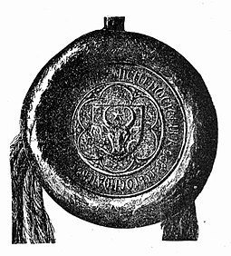
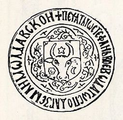

Domnia lui Stefan cel Mare
 
Politica dusă de Ștefan cel Mare pe plan intern de-a lungul domniei avea ca scop principal
consolidarea puterii centrale a domnului și asigurarea liniștii sociale. În acest sens, principalele
direcții de acțiune au fost reprezentate de: repopularea țării prin împroprietărirea cu pământ și
acordarea de privilegii răzeșimii, crearea unei noi clase aristocratice (mica boierime) pe baza
meritocrației militare, întărirea puterii militare și a capacității de apărare a țării, reconcilierea cu
vechile familii boierești și rechemarea celor plecați în exil, asigurarea loialității Sfatului Domnesc -
prin creșterea ponderii dregătorilor militari (pârcălabii) și introducerea unui număr însemnat de
membri ai familiei sale.
În încercarea de a găsi o contrapondere politică la clasa marilor boieri, Ștefan a manifestat o
preocupare constantă pentru dezvoltarea micii boierimi (curtenii și slujitorii) și a țărănimii libere.Marea proprietate,
acordată boierilor, era din punct de vedere juridic „feudă”, fiind grevată de
obligația titularului de a efectua serviciul militar cu oamenii săii în schimbul garantării de către
domn a posesiuni pământului. În schimb, mica proprietate, deși nu se se bucura de vreo garanție din
partea domnului, era lipsită și de constrângeri militare, fiind una de tip alodial.
Din acest motiv, până la urcarea pe tron a lui Ștefan, țăranii liberi nu erau obligați să
presteze serviciul militar, deoarece pământul pe care îl stăpâneau nu era primit de la domn. Ștefan
avea să facă o reformă radicală în sistemul realțiilor feudale, prin obligarea țărănimii libere la
prestarea serviciului militar, conferind astfel acestei clase o funcție politică importantă în viața
statului. Utilizarea răzeșimii în armată a reprezenta o lovitură importantă la situația privilegiată a
marii boierimi, singura care avea monopolul obligațiilor militare. În momentul în care Ștefan a
implicat în chestiunile de apărare a țării și alte elemente sociale, care executau serviciul militar fără
a primi în schimb imunități și privilegii, ponderea marii boierimi mari ca bază socială a țării, s-a
diminuat în in mod esențial.
Relația sa cu marea boierime a fost una în general pașnică, caracterizată prin
autoritarism domnesc, cu puține manifestări de nesupunere sau revoltă din partea boierilor. Relația a
evoluat în timp, pe măsură ce autoritatea centrală a domnului se întărea. Astfel, în primii ani de
domnie, Ștefan a căutat să țină sub control puterea boierilor prin menținerea privilegiilor, iertarea
celor care l-au slujit pe Petru Aron și trimiterea de cărți de iertare și rechemarea în țară a boierilor
fugari, în frunte cu boierul Mihu.
Ștefan a schimbat de asemenea și ierarhia boierească, creând imediat sub domn un nivel al
conducătorilor administrațiilor locale, pârcălabii de cetăți (ținuturi), cărora le-a acordat puteri
lărgite. Pentru a-și consolida puterea și a-și asigura controlul asupra acestora, el a încredințat aceste
posturi de mare raspundere doar rudelor sale și celor mai apropiați dintre boieri. Ca semn al
importanței pe care o aveau, pârcălabii erau situați întotdeauna inaintea dregătorilor de curte, cu
exceptia marelui vornic .
În aceeași idee Ștefan a asigurat o stabilitate mare pe funcții a marilor dregători , mulți
rămânând în aceeași poziție pentru un număr mare de ani, cum ar fi: marele spătar Câlnău –
optsprezece ani, marele vistiernic Iuga – douăzeci și unu de ani sau marele logofăt Tăutu – mai mult
de treizeci de ani. Acest lucru a asigurat totodată și o mare stabilitate administrației țării.Ca urmare
â a acestor măsuri, Ștefan a avut de înfruntat doar două conspirații boierești în cei
patruzeci și șapte de ani de domnie, cea din 1471 - când au fost decapitați trei mari boieri în frunte
cu cumnatul său, marele vornic Isaia și cea organizată în 1504 - cu două zile înainte de moartea sa,care viza îndepărtarea fiului său Bogdan de la tron, terminată identic cu omorârea capilor
conspirației.
Politica internă